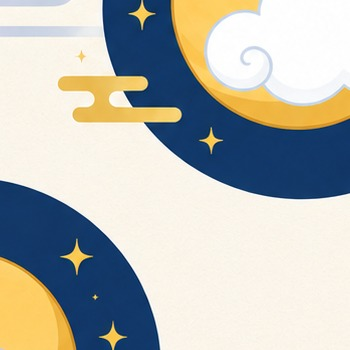
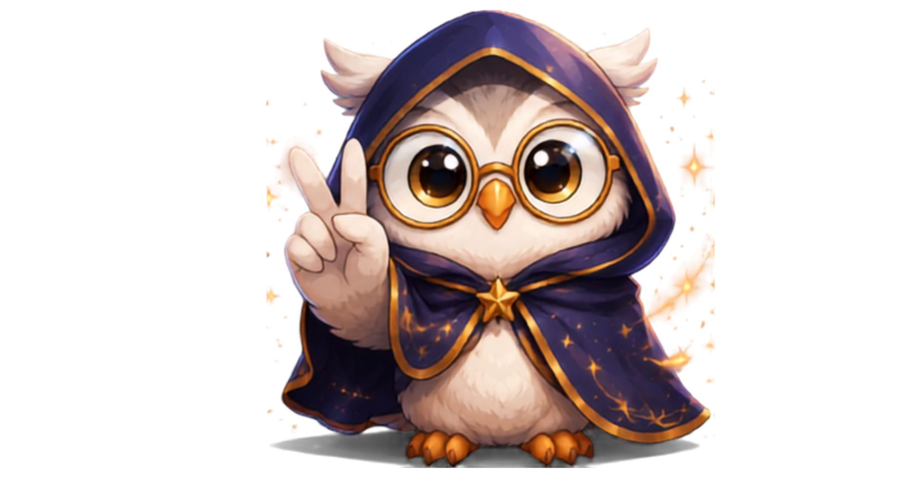
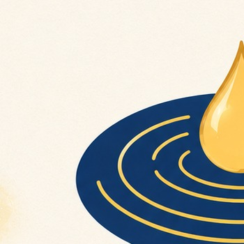
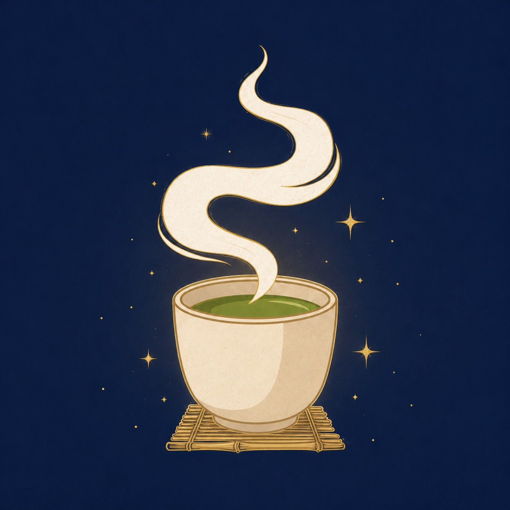
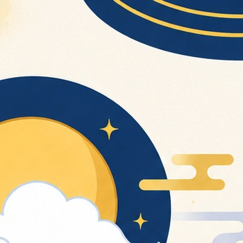

LUNASUI
手のひらの写真をきっかけに、今のあなたらしさを、やさしく言葉にします。
まず、手のひらを見せてください
写真は外部へ送信・保存されません。現在の公開版は、写真を入口に16タイプの言葉を届ける体験版です。

静かにお待ちください
手のひら全体を見つめています…
ルナスイから、今のあなたへ
あなたの手相タイプ

ルナスイより
それでは、気になるところから一緒に見ていきましょう。


次は、二人で見てみませんか？
自分の手相だけでは見えなかったことも、二人の違いを並べると「だから伝わり方が違ったんだ」と気づけることがあります。

今回の診断は、今のあなたを映した一枚です。
手相は、毎日のように大きく変わるものではありません。
新しい環境に挑戦したとき、人生の節目を迎えたとき、あるいは半年ほど経った頃に、もう一度手を見せてください。
その頃には、今とは少し違う「あなたらしさ」が表れているかもしれません。
この診断が、あなた自身や大切な人との会話のきっかけになれば嬉しいです。
また必要なときに、お待ちしています。